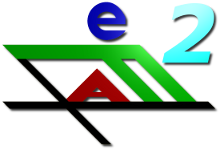

|  |
efa - elektronisches FahrtenbuchVersion 2 (Entwickler-Version)Copyright © 2001-11 by Nicolas Michael
<info@efa.nmichael.de>
|
Hinweis: Die vorliegende Version von efa ist eine Entwicklerversion, die viele neue Funktionen enthält, jedoch noch nicht ausführlich getestet ist. Sie richtet sich an Nutzer, die schon möglichst früh die neuen Funktionen der Version 2 testen und ausprobieren möchten und durch ihr Feedback die weitere Entwicklung unterstützen möchten. Nutzer, die in erster Linie an einer stabilen Version interessiert sind, sollten im Produktiveinsatz die Version 1.8.3 einsetzen.
Beta-Test von efa2
Die offizielle Version 2.0 von efa ist erst für den Sommer 2011 geplant. Bis
dahin wird es mehrere vorab veröffentlichte Entwicklerversionen geben.
Dein Feedback als Nutzer dieser frühen Versionen ist dabei besonders wichtig,
efa 2.0 weiterzuentwickeln und zu verbessern. Bitte trage Deine Anregungen und
Fehlermeldungen auf der Seite kenai.com/projects/efa
in die Diskussionsforen ein, oder trete aktiv der Weiterentwicklung bei! Vielen Dank!
Starten von efa
Je nach Einsatzzweck bietet efa zwei verschiedene Versionen (Modi) an, in denen
efa betrieben werden kann:
Die Basis-Version startet mit einer Administrations-Oberfläche mit vollem
Zugriff auf alle Daten und ist für den Einsatz eines Bootswarts, Administrators
oder einer Privatperson gedacht.
Die Bootshaus-Version startet mit einer vereinfachten Oberfläche, die für den
Einsatz im Bootshaus gedacht ist, bei der Vereinsmitglieder ihre Fahrten direkt
in efa eintragen und sämtliche Administrationsaufgaben nur passwortgeschützt
von einem Administrator durchgeführt werden können.
Bei Verwendung des Windows-Setup-Programms werden automatisch Einträge zum
Starten von efa im Windows-Startmenü erzeugt.
Ansonsten kann efa durch folgende Batch-Dateien bzw. Skripte gestartet werden:
| efa_base.sh | efa Basis-Version | Linux/UNIX |
| efa_base.bat | efa Basis-Version | Windows |
| efa_bh.sh | efa Bootshaus-Version | Linux/UNIX |
| efa_bh.bat | efa Bootshaus-Version | Windows |
| efa_cli.sh | efa Kommandozeilen-Programm | Linux/UNIX |
| efa_cli.bat | efa Kommandozeilen-Programm | Windows |
| eddi.sh | eddi - efa Datenlisten-Importeur | Linux/UNIX |
| eddi.bat | eddi - efa Datenlisten-Importeur | Windows |
| elwiz.sh | elwiz - efa Layout Wizard | Linux/UNIX |
| elwiz.bat | elwiz - efa Layout Wizard | Windows |
| emil.sh | emil - efa Meldedatei-Editor | Linux/UNIX |
| emil.bat | emil - efa Meldedatei-Editor | Windows |
Leider gibt es noch keine weitere Dokumentation zu efa 2.0!
Hilfe findest Du auf efa.nmichael.de/efa2 und
kenai.com/projects/efa.